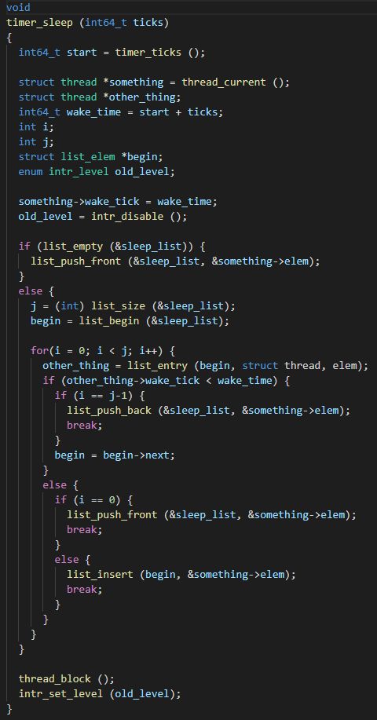
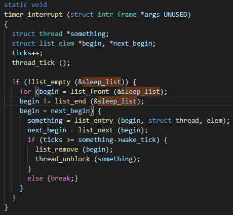
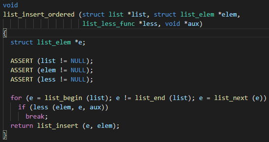
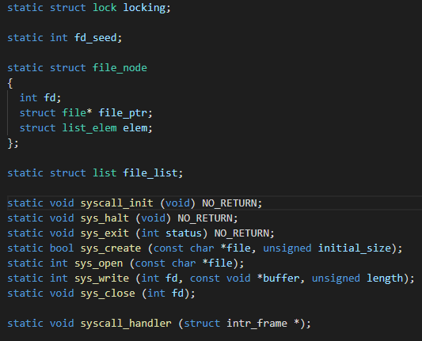

Pintos project
프로젝트 설명:
Pintos 운영체제에 주요 알고리즘 제작
주요 업무:
알고리즘 작성, 테스트
src/devices/timer.c
 src/lib/kernel/list.c
src/userprog/syscall.c
report
============
|| ALARM CLOCK ||
============
---- DATA STRUCTURES ----
>> A1: Copy here the declaration of each new or changed `struct' or
>> `struct' member, global or static variable, `typedef', or
>> enumeration. Identify the purpose of each in 25 words or less.
:static struct list sleep_list : To control blocked(sleep) thread lists.
enum intr_level old_level : To check the interrupt level before I touch.
struct thread->int64_t wake_tick : It is showed alarm time on the base variable "ticks" function.
---- ALGORITHMS ----
>> A2: Briefly describe what happens in a call to timer_sleep(),
>> including the effects of the timer interrupt handler.
:The blocked threads are put in the "sleep_list" with asceding order.
The "timer_interrupt" function check the first element in "sleep_list" every tick
and pop it, if it is or is over the alarmed time.
>> A3: What steps are taken to minimize the amount of time spent in
>> the timer interrupt handler?
:In the "busy waitting" system, in every tick, the "thread_yield" is called, but in
this code, it only check one member variable in the first element, which means much ligther.
>> A6: Why did you choose this design? In what ways is it superior to
>> another design you considered?
:I imagined every sleeping thread has their own timer loop. However if there are many sleeping thread, it need
many loops so this is absurd. To control the sleeping thread at one time, I need a data structure
which is "sleep_list". Also, this can be controlled by the "timer_interrupt" function. When there is no
sleeping thread, this design is almost similar with just "tick++", thus it is much efficient.
|| PRIORITY SCHEDULING ||
==================
---- DATA STRUCTURES ----
>> B1: Copy here the declaration of each new or changed `struct' or
>> `struct' member, global or static variable, `typedef', or
>> enumeration. Identify the purpose of each in 25 words or less.
:None, but declared one function.
---- RATIONALE ----
>> B7: Why did you choose this design? In what ways is it superior to
>> another design you considered?
:By using built-in function, list_insert_ordered,
it becomes more neat than elaborating it in new functions.
================
|| ARGUMENT PASSING ||
================
---- DATA STRUCTURES ----
>> A1: Copy here the declaration of each new or changed `struct' or
>> `struct' member, global or static variable, `typedef', or
>> enumeration. Identify the purpose of each in 25 words or less.
: Nothing
>> A2: Briefly describe how you implemented argument parsing. How do
>> you arrange for the elements of argv[] to be in the right order?
>> How do you avoid overflowing the stack page?
:Subtract how much I will write in stack from esp, then reversely input stack data. Also, I used memcpy, memset and strlcpy. These functions cna help to limit length to copy.
>> A3: Why does Pintos implement strtok_r() but not strtok()?
:Because argument string is constituted "file name" and "argument". We need to devide them.
>> A4: In Pintos, the kernel separates commands into a executable name
>> and arguments. In Unix-like systems, the shell does this
>> separation. Identify at least two advantages of the Unix approach.
:Easy to clarify a executable name, and preventing overflow by limiting length of components.
|| SYSTEM CALLS ||
============
---- DATA STRUCTURES ----
>> B1: Copy here the declaration of each new or changed `struct' or
>> `struct' member, global or static variable, `typedef', or
>> enumeration. Identify the purpose of each in 25 words or less.
static int fd_seed;
static struct file_node
{
int fd;
struct file* file_ptr;
struct list_elem elem;
};
static struct list file_list;
Those are newly declared 'struct'.
They are for associating file descriptor and file pointer.
>> B2: Describe how file descriptors are associated with open files.
>> Are file descriptors unique within the entire OS or just within a
>> single process?
:File descriptor is increasing integer for each opening of new file.
It is only unique within a single process.
>> B3: Describe your code for reading and writing user data from the
>> kernel.
:In SYSCALL_HANDLER get user data by 'f->esp' and check its validity.
In each seperated cases, when the return value is written, put it back
with 'f->eax' register.
>> B4: Suppose a system call causes a full page (4,096 bytes) of data
>> to be copied from user space into the kernel. What is the least
>> and the greatest possible number of inspections of the page table
>> (e.g. calls to pagedir_get_page()) that might result? What about
>> for a system call that only copies 2 bytes of data? Is there room
>> for improvement in these numbers, and how much?
:1~2048, save & read 1 or 2 more byte for location data. If use 2 more byte,
it become 1~1024.
>> B5: Briefly describe your implementation of the "wait" system call
>> and how it interacts with process termination.
:Not yet implemented in this project.
>> B6: Any access to user program memory at a user-specified address
>> can fail due to a bad pointer value. Such accesses must cause the
>> process to be terminated. System calls are fraught with such
>> accesses, e.g. a "write" system call requires reading the system
>> call number from the user stack, then each of the call's three
>> arguments, then an arbitrary amount of user memory, and any of
>> these can fail at any point. This poses a design and
>> error-handling problem: how do you best avoid obscuring the primary
>> function of code in a morass of error-handling? Furthermore, when
>> an error is detected, how do you ensure that all temporarily
>> allocated resources (locks, buffers, etc.) are freed? In a few
>> paragraphs, describe the strategy or strategies you adopted for
>> managing these issues. Give an example.
:First, check the validity of addresses by checking whether they are
below PHYS_BASE, and null pointer in SYSCALL_HANDLER before call
each system call. And in each function check and handle more exceptions
that can be occur in each functions, including unmapped address case.
Also for exception cases, by following the resources in line, makes
them managed.
---- SYNCHRONIZATION ----
>> B7: The "exec" system call returns -1 if loading the new executable
>> fails, so it cannot return before the new executable has completed
>> loading. How does your code ensure this? How is the load
>> success/failure status passed back to the thread that calls "exec"?
>> B8: Consider parent process P with child process C. How do you
>> ensure proper synchronization and avoid race conditions when P
>> calls wait(C) before C exits? After C exits? How do you ensure
>> that all resources are freed in each case? How about when P
>> terminates without waiting, before C exits? After C exits? Are
>> there any special cases?
>> B9: Why did you choose to implement access to user memory from the
>> kernel in the way that you did?
:After see "syscall-nr.h" and the pdf file. All syscall is defined with number and, in the pdf, # of argument is "esp+1", "esp+4", etc. Therefore, I think esp could be int type.
>> B10: What advantages or disadvantages can you see to your design
>> for file descriptors?
:It's easy to manage in "file_list", but it's not easy to make it.
>> B11: The default tid_t to pid_t mapping is the identity mapping.
>> If you changed it, what advantages are there to your approach?
:Maybe we can use string for identify. It makes more obvious about what is the role of process or thread.